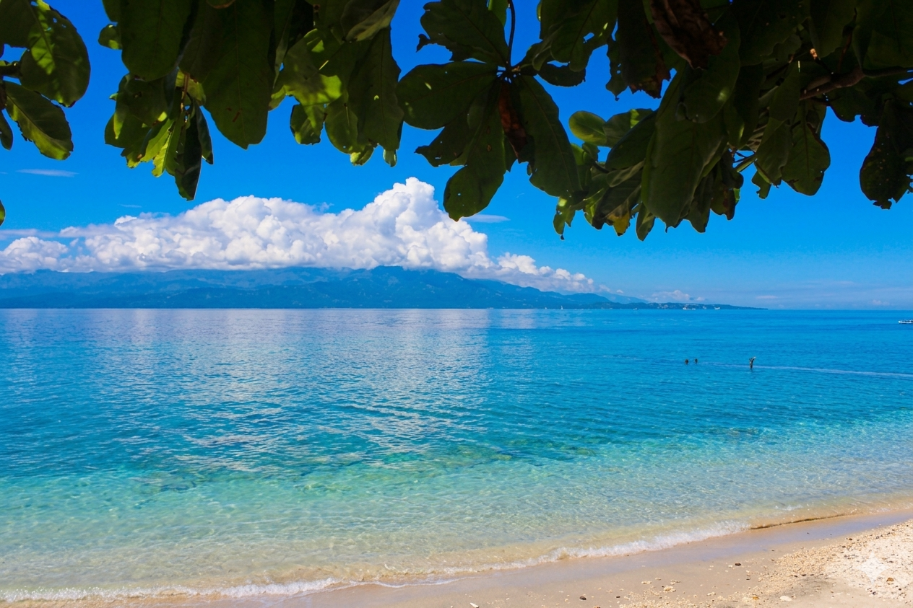

Fortune Island
Fortune Island
A famous abandoned resort island in Nasugbu, Batangas known for its Greek-inspired ruins, cliffside views, and clear blue waters. It is a popular destination for camping, photography, and island hopping.
- Location: Nasugbu, Batangas
- Difficulty: Easy (boat ride + exploration)
- Type: Island / Historical ruins
- Best Season: November – May (dry season)
- Highlights: Greek pillars, cliff views, sunset scenery, camping
- Activities: Swimming, camping, photography, sightseeing

Isla Verde
Isla Verde
A remote island in Batangas known for its rich marine biodiversity, coral reefs, and clear waters. It is one of the best diving and snorkeling spots in the Philippines.
- Location: Batangas City / Verde Island Passage
- Difficulty: Moderate (boat travel required)
- Type: Island / Marine sanctuary
- Best Season: March – May (calmest waters)
- Highlights: Coral reefs, snorkeling, diving spots, clear waters
- Activities: Snorkeling, diving, island hopping